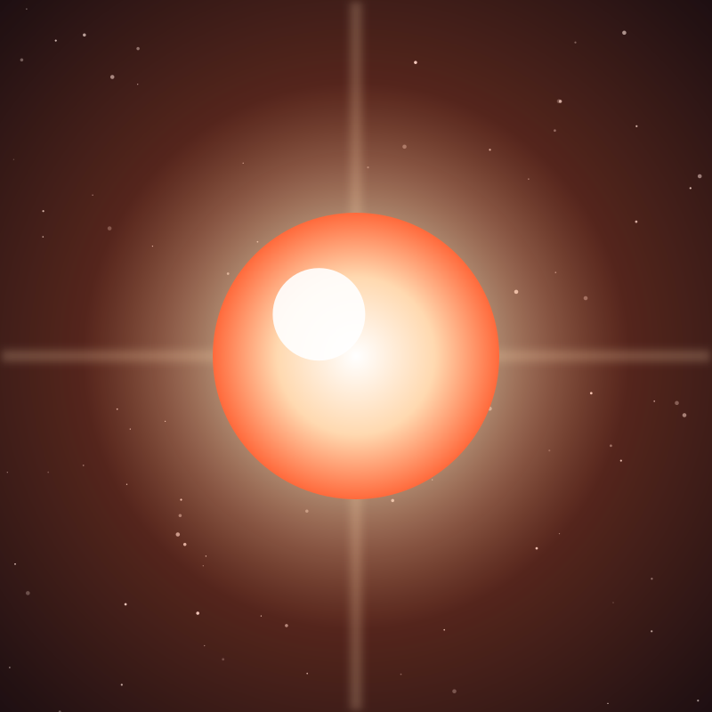

Star
Betelgeuse
A red supergiant on the edge of stellar death, so vast it would swallow the orbit of Jupiter if placed at our Sun.
Object 19 of 26

Key facts
- Distance
- ~642 light-years
- Radius
- ~764 × Sun
- Mass
- ~16-19 × Sun
- Spectral type
- M1-2 Ia-ab (red supergiant)
- Surface temperature
- 3,600 K
- Luminosity
- ~100,000 × Sun
- Age
- ~8-10 million years
- Variability
- ~400-day cycle
Overview
Betelgeuse is a red supergiant marking the shoulder of Orion and one of the largest stars visible to the naked eye. If it replaced our Sun, its surface would extend past the orbit of Jupiter and swallow Mercury, Venus, Earth and Mars.
It is a cool star — its surface glows at about 3,600 K, cooler than the Sun — but it is so vast that it radiates roughly 100,000 times more energy. Its name comes from an Arabic phrase meaning 'the armpit of the central one', fitting its position in the constellation.
The Great Dimming
In late 2019 Betelgeuse dimmed dramatically, losing about 35 percent of its brightness and fading from magnitude 0.5 to 1.6 over a few weeks. Observers wondered whether it was about to explode.
Combined observations from Hubble and ALMA showed the cause: the star had ejected a cloud of material that cooled into dust and drifted across its face, blocking the light. The dimming was a surface event, not the prelude to a supernova.
Supernova Coming
Betelgeuse is in the final stage of its life and will end as a supernova — probably within the next 100,000 years, sudden by astronomical standards but uncertain by human ones.
At 642 light-years it poses no danger to Earth. The explosion would be bright enough to see in daylight for months and at night for years, casting shadows and outshining the Moon, before fading to leave a neutron star or black hole behind.
The Surface Itself
Betelgeuse is not a smooth sphere. Its surface is a boiling patchwork of convection cells, some as large as the orbit of the Earth, which brighten and darken as hot material rises and cools.
It is also losing mass at a remarkable rate — roughly a Sun's worth of material every 10,000 years — creating a bow shock as it plows through the interstellar medium. The red glow we see is that shed material as much as the star itself.